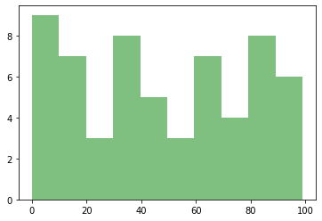
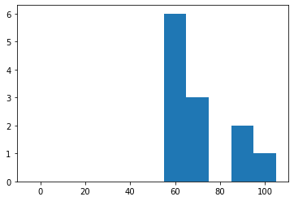

P04 For-loop
Contents
P04 For-loop#
for-if-else的語法概念本身並不難，一個是重複執行的結構，一個是條件判斷式。學習重點應在於，會怎麼活用他們來完成一些任務。
for-loop: Review
Print out elements iteratively
Sum up all values in a list
Assign values into equal length brackets
(More) Plotting
for-loop: More applications
Application: generating fibonnacci sequence
Application: Generating Pi
Application: 9x9 table
For#
無論是計數或把所有youbike站台的資訊列印出來，都需要用到一個指令for。它會讓程式在指定的範圍內重複執行，所以也經常被稱為for-each。
用以列舉／走訪每個項目#
Iterating/Traversing
這裡的for-loop用以列舉過list中的每個物件來達到計數的功能。
# Counting
fruit_count = {}
fruit_list = ['apple', 'apple', 'banana', 'apple', 'banana', 'grape', 'banana', 'apple']
for fruit in fruit_list:
if fruit not in fruit_count:
fruit_count[fruit] = 1
else:
fruit_count[fruit] = fruit_count[fruit] + 1
print(fruit_count)
{'apple': 4, 'banana': 3, 'grape': 1}
用以僅僅是把所有的內容給print出來。
for fruit in ['apple', 'banana', 'cherry', 'Durian']:
print("I love", fruit)
I love apple
I love banana
I love cherry
I love Durian
table = {'Sjoerd': 41273, 'Jack': 409, 'Dcab': 7678}
for name, id in table.items():
print(f'{name:10} ==> {id:10d}')
Sjoerd ==> 41273
Jack ==> 409
Dcab ==> 7678
走訪字串#
之前在P02提及多種資料型態時，在(4)序列（sequence Types）的地方曾提及文字字串（str）也是一種序列型態。所以，如果有一個文字word = banana的話，word[0]會是b，而word[1]會是a，依此類推。
word = "banana"
print(word[0], word[1])
for x in word:
print(x)
b a
b
a
n
a
n
a
中止迴圈break & continue#
在for-loop執行過程中，有時候會希望在某些條件成立時，就直接終止並跳出整個for-loop，或者，迴圈內以下的內容就不要執行，直接執行下一個iteration。包含以下兩種指令：
continue: 當條件成立，下方的迴圈內容就不再執行，直接進入下一個iteration。break：當條件成立，就終止整個回圈，跳出回圈的執行。
在寫爬蟲的時候經常會用到break和continue的指令，原因是常常不知道究竟要爬多少頁才要停下來，或者，會不會爬到一個已經被移除的貼文（例如PTT）。
break的應用：在撰寫爬蟲的時候，偶而會遇到不知道要爬到什麼時候，或者總資料筆數有多少（例如Twitter、DCard等等有API的服務）。此時通常會為for-loop設定一個過大停止值，例如撈個1000,000頁。此時，for-loop會一頁一頁往下撈，但總會遇到for-loop撈不到下一頁的情形，那就看看產生的錯誤是什麼，然後用if來判斷，如果出現該錯誤的時候，我就break出整個for-loop迴圈，就會停止該for-loop而不會真的撈到100,000頁。continue的應用：在撰寫爬蟲的時候，通常我們會在for-loop中邊爬邊剖析資料，也就是把一個頁面爬下來之後，就立刻剖析他，偵測看看標題、作者是什麼，然後才進入下一迴圈、爬下一個頁面。但是，偶而就會遇到像是PTT的貼文一樣，明明還有該網址，但是內容卻被移除了。既然內容被移除了，那就偵測不到標題和作者了。這時候，程式的寫法往往會是，我偵測看看是不是貼文是不是被移除了，如果被移除了，雖然我把該頁抓下來了，那我就用continue跳過剖析頁面資料的過程，直接進入下一圈迴圈（沒跳過反而會出現Error）。但也許各位會問，那這樣不就和if-else很像？如果偵測到什麼，就做什麼事。但利用continue可以讓程式碼比較乾淨，不用把之後要剖析資料的程式碼，放在if-else的判斷式裡面。
continue的邏輯示意圖如下，當滿足某個條件而執行continue時，便不會執行在for-loop在continue後面的指令，而會直接進入下一圈for-loop（Illustration from https://www.geeksforgeeks.org/break-continue-and-pass-in-python/）。

grades = {'albert': 33, 'bob': 44, 'carlos': 100, 'david': 90, 'ellen': 100}
for g in grades:
if grades[g] >=100:
print(g)
carlos
ellen
在下面的例子中，若讀到小於100的數值，就直接進入下一個iteration，就不會執行到print(g)
grades = {'albert': 33, 'bob': 44, 'carlos': 100, 'david': 90, 'ellen': 100}
for g in grades:
if grades[g] < 100:
continue
print(g)
carlos
ellen
在下面的例子中，若讀到大於等於100的數值，break會使得整個for-loop終止。通常用於找到一序列的資料中，有沒有包含某個合乎條件的情形，有的話便跳出。
grades = {'albert': 33, 'bob': 44, 'carlos': 100, 'david': 90, 'ellen': 100}
for g in grades:
if grades[g] >= 100:
print(g)
break
carlos
range()函式#
for x in range(6):
print(x)
0
1
2
3
4
5
for x in range(2, 6):
print(x)
2
3
4
5
for x in range(2, 30, 3):
print(x)
2
5
8
11
14
17
20
23
26
29
EX01 Sum up all values in a list#
alist = [1, 2, 3, 4, 5, 6, 7, 8, 9, 10]
sum_a = 0
for a in alist:
sum_a += a
print(sum_a)
55
alist = [1, 2, 3, 4, 5, 6, 7, 8, 9, 10]
sum(alist)
55
grades = {'albert': 33, 'bob': 44, 'carlos': 100, 'david': 90, 'ellen': 100}
grade_sum = 0
for g in grades:
grade_sum += grades[g]
print(grade_sum)
367
EX02 Sum up the number of ubike#
計算讀到的資料中，目前共有多少個ubike停駐位、又有多少ubike目前正停駐在車格上
import requests
import json
response = requests.get('https://tcgbusfs.blob.core.windows.net/blobyoubike/YouBikeTP.gz')
print(type(response)) # <class 'requests.models.Response'>
print(type(response.text)) # <class 'str'>
bike_data = json.loads(response.text)
<class 'requests.models.Response'>
<class 'str'>
type(bike_data['retVal'])
bike_data['retVal'].keys()
dict_keys(['0001', '0002', '0004', '0005', '0006', '0007', '0008', '0009', '0010', '0011', '0012', '0014', '0016', '0017', '0018', '0019', '0021', '0022', '0024', '0025', '0026', '0027', '0028', '0029', '0030', '0031', '0032', '0033', '0034', '0035', '0036', '0038', '0039', '0040', '0041', '0042', '0043', '0044', '0045', '0046', '0047', '0048', '0049', '0050', '0051', '0052', '0053', '0054', '0055', '0056', '0057', '0058', '0059', '0060', '0061', '0062', '0063', '0064', '0065', '0066', '0067', '0068', '0069', '0070', '0071', '0072', '0073', '0074', '0075', '0076', '0077', '0078', '0079', '0081', '0082', '0083', '0084', '0085', '0086', '0087', '0088', '0089', '0090', '0091', '0092', '0093', '0094', '0095', '0096', '0097', '0098', '0099', '0100', '0102', '0103', '0104', '0105', '0106', '0107', '0109', '0110', '0111', '0112', '0113', '0114', '0115', '0116', '0117', '0118', '0119', '0120', '0122', '0123', '0125', '0126', '0127', '0128', '0129', '0130', '0131', '0133', '0134', '0135', '0136', '0137', '0138', '0139', '0140', '0141', '0142', '0143', '0145', '0147', '0148', '0149', '0150', '0151', '0152', '0153', '0154', '0155', '0156', '0157', '0158', '0159', '0161', '0162', '0163', '0164', '0165', '0166', '0167', '0168', '0169', '0170', '0171', '0172', '0173', '0175', '0176', '0177', '0178', '0179', '0180', '0181', '0182', '0183', '0184', '0186', '0187', '0188', '0189', '0190', '0191', '0192', '0193', '0194', '0195', '0196', '0197', '0201', '0202', '0203', '0204', '0205', '0206', '0207', '0208', '0209', '0210', '0211', '0212', '0213', '0214', '0215', '0216', '0217', '0218', '0219', '0220', '0221', '0222', '0223', '0224', '0225', '0226', '0227', '0228', '0230', '0231', '0232', '0233', '0234', '0235', '0236', '0238', '0239', '0240', '0241', '0242', '0243', '0244', '0245', '0246', '0247', '0248', '0249', '0250', '0251', '0252', '0253', '0254', '0256', '0257', '0258', '0259', '0260', '0261', '0262', '0263', '0264', '0265', '0266', '0267', '0268', '0269', '0270', '0271', '0272', '0273', '0274', '0275', '0276', '0277', '0278', '0279', '0280', '0281', '0282', '0283', '0284', '0285', '0286', '0287', '0288', '0289', '0290', '0291', '0292', '0293', '0294', '0295', '0296', '0297', '0298', '0299', '0300', '0301', '0302', '0303', '0304', '0305', '0307', '0308', '0309', '0310', '0311', '0312', '0313', '0314', '0315', '0316', '0317', '0318', '0319', '0320', '0322', '0323', '0324', '0325', '0326', '0327', '0328', '0329', '0330', '0332', '0333', '0334', '0335', '0336', '0337', '0338', '0339', '0340', '0341', '0342', '0344', '0345', '0346', '0347', '0348', '0349', '0350', '0351', '0352', '0354', '0355', '0356', '0357', '0358', '0360', '0361', '0362', '0363', '0364', '0365', '0366', '0367', '0368', '0369', '0371', '0372', '0373', '0374', '0376', '0377', '0379', '0380', '0381', '0382', '0383', '0385', '0386', '0387', '0388', '0389', '0390', '0391', '0392', '0393', '0394', '0395', '0396', '0397', '0398', '0400', '0401', '0402', '0403', '0404', '0405'])
# accmulate all sbi
sbi_sum = 0
tot_sum = 0
for k, site in bike_data['retVal'].items():
sbi_sum = sbi_sum + int(site['sbi'])
tot_sum = tot_sum + int(site['tot'])
print(sbi_sum, tot_sum)
2338 7116
EX03 Assign values into equal length brackets#
之前在做Counting時，每個項目是離散的，但今天我如果要把成績的百分制等分均分至數個區間後（0-10, 10-20, …, 90-100, 100），分別計算每個區間有多少人要怎麼做？
Plotting by hist()#
grades = [17, 65, 5, 74, 93, 1, 94, 16, 80, 95, 32, 78, 17, 70, 22, 43, 95, 67, 3, 30, 40, 51, 96, 17, 13, 21, 4, 47, 19, 44, 59, 6, 0, 83, 40, 89, 39, 57, 99, 35, 81, 31, 89, 63, 80, 85, 36, 60, 17, 68, 62, 36, 3, 28, 8, 38, 83, 73, 67, 2]
%matplotlib inline
import matplotlib.pyplot as plt
plt.hist(grades, 10, facecolor='green', alpha=0.5)
(array([9., 7., 3., 8., 5., 3., 7., 4., 8., 6.]),
array([ 0. , 9.9, 19.8, 29.7, 39.6, 49.5, 59.4, 69.3, 79.2, 89.1, 99. ]),
<BarContainer object of 10 artists>)

Counting then plotting by bar()#
grades = [60, 65, 62, 65, 62, 73, 78, 90, 100, 99, 67, 73]
glist = [0, 0, 0, 0, 0, 0, 0, 0, 0, 0, 0]
%matplotlib inline
import matplotlib.pyplot as plt
print(len(glist))
for g in grades:
glist[int(g/10)] += 1
print(list(range(0, 101, 10)))
print(glist)
plt.bar(list(range(0, 101, 10)), glist, width=10)
11
[0, 10, 20, 30, 40, 50, 60, 70, 80, 90, 100]
[0, 0, 0, 0, 0, 0, 6, 3, 0, 2, 1]
<BarContainer object of 11 artists>

EX04 Generating fibonnacci sequence#
費氏數列第一個為0，第二個為1，第三者之後為前兩項相加，請問第10項是多少？ 請嘗試將你的答案列印為以下的模樣
1 1
2 2
3 3
4 5
5 8
6 13
7 21
8 34
9 55
10 89
## Generating fibonnacci number sequence
# 0, 1, 1, 2, 3, 5, 8, 13, 21, 34, 55, ...
a, b = 0, 1
for i in range(10):
a, b = b, a+b
print(a, "\t", b)
1 1
1 2
2 3
3 5
5 8
8 13
13 21
21 34
34 55
55 89
EX05 Generating Pi#
Gregory and Leibniz found Pi/4 = 1 - 1/3 + 1/5 - 1/7 + 1/9… https://mathworld.wolfram.com/PiFormulas.html
pi = 0
sign = 1
for i in range(1, 100000000, 2):
pi += sign*(1/i)*4
sign *= -1
print(pi)
3.1415926335902506
EX06 Print 9x9 tables#
for a in range(1, 10):
for b in range(1, 10):
print("%d*%d =%-2d"%(a, b, a*b), end=" ")
print()
1*1 =1 1*2 =2 1*3 =3 1*4 =4 1*5 =5 1*6 =6 1*7 =7 1*8 =8 1*9 =9
2*1 =2 2*2 =4 2*3 =6 2*4 =8 2*5 =10 2*6 =12 2*7 =14 2*8 =16 2*9 =18
3*1 =3 3*2 =6 3*3 =9 3*4 =12 3*5 =15 3*6 =18 3*7 =21 3*8 =24 3*9 =27
4*1 =4 4*2 =8 4*3 =12 4*4 =16 4*5 =20 4*6 =24 4*7 =28 4*8 =32 4*9 =36
5*1 =5 5*2 =10 5*3 =15 5*4 =20 5*5 =25 5*6 =30 5*7 =35 5*8 =40 5*9 =45
6*1 =6 6*2 =12 6*3 =18 6*4 =24 6*5 =30 6*6 =36 6*7 =42 6*8 =48 6*9 =54
7*1 =7 7*2 =14 7*3 =21 7*4 =28 7*5 =35 7*6 =42 7*7 =49 7*8 =56 7*9 =63
8*1 =8 8*2 =16 8*3 =24 8*4 =32 8*5 =40 8*6 =48 8*7 =56 8*8 =64 8*9 =72
9*1 =9 9*2 =18 9*3 =27 9*4 =36 9*5 =45 9*6 =54 9*7 =63 9*8 =72 9*9 =81